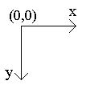
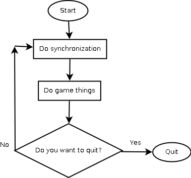
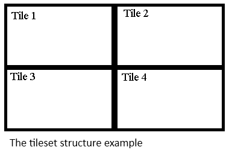

Gopher Game Development Kit: Programmer Reference
- Part 1. Welcome to Gopher Game Development Kit
- Chapter 1. Introduction
- Chapter 2. A special thanks
- Chapter 3. The Gopher 2 Specific Notes
- Chapter 4. SDK
- Chapter 5. Compilation
- Chapter 6. The library namespace
- Chapter 7. License
- Part 2. The basic things
- Chapter 1. The coordinate system
- Chapter 2. A game loop
- Part 3. Graphics
- Chapter 1. The virtual surface
- Chapter 2. The plane
- Chapter 3. The base graphics subsystem
- Chapter 4. The graphic primitives
- Chapter 5. The base image subsystem
- Chapter 6. The animation subsystem
- Chapter 7. The ordinary background
- Chapter 8. The ordinary sprites
- Chapter 9. Tileset
- Chapter 10. Text
- Chapter 11. Loading an image
- Part 4. The game-specific things
- Chapter 1. The collision detector
- Chapter 2. Timer
- Part 5. The binary files
- Chapter 1. The base binary files subsystem
- Chapter 2. The file reader
- Chapter 3. The file writer
- Part 6. The other important things
- Chapter 1. Memory
- Chapter 2. The display backlight
- Chapter 3. Battery
- Chapter 4. Abnormal program termination
- Chapter 5. Interaction with the operating system
- Chapter 6. Filesystem
- Chapter 7. Input
- Part 7. Sound
- Chapter 1. The low-level sound subsystem
- Chapter 2. Loading audio
- Chapter 3. Playing audio
- Chapter 4. Mixer
- Part 8. The internal details of the library subsystems
- Chapter 1. A few words for curious programmers
- Chapter 2. The internal classes
- Chapter 3. The low-level sound subsystem
- Chapter 4. The base graphics subsystem
- Chapter 5. The input subsystem
- Chapter 6. The base image subsystem
- Changelog
Part 1. Welcome to Gopher Game Development Kit
Chapter 1. Introduction
Introduction.
Gopher 2 is the portable game console. It uses Dingux as the firmware.
Dingux is a Linux-based operating system. I like Linux, but I don’t
like the SDL library. I made my own library. I hope that my C++ library will be useful for many programmers.
Features.
Let me show the library's features. Let’s go.
- Open-source code.
- Easy-to-use object-oriented design.
- This library can be easily ported to another portable Linux device.
- Very fast.
- zlib license.
- The minimum number of external dependencies: only the standard run-time library and POSIX Threads.
Installation.
Follow these steps:
Copy these files to your project directory: gophergdk.h, gophergdk.cpp, and makefile.
Add this directive to your source code: #include “gophergdk.h”
Edit the makefile.
Chapter 2. A special thanks
What do you need when you try to create a big thing? A technical
consultation. I need it too. I want to say «Big thanks for the
technical consultation» to these people:
Also, thanks to the PVS-Studio team for the free license.
Chapter 3. The Gopher 2 Specific Notes
This library needs the alternative firmware for correct work.
Chapter 4. SDK
This library was successfully tested with the following SDK:
Chapter 5. Compilation
Disable all compiler optimization. It needs to work correctly. See
the GCC documentation for more information about compiler optimization.
Chapter 6. The library namespace
All library classes are declared in the GOPHERGDK namespace.
Chapter 7. License
The Gopher Game Development Kit license
Copyright (C) 2020-2021 Popov Evgeniy Alekseyevich
This software is provided 'as-is', without any express or implied
warranty. In no event will the authors be held liable for any damages
arising from the use of this software. Permission is granted to anyone
to use this software for any purpose, including commercial
applications, and to alter it and redistribute it freely, subject to
the following restrictions:
1. The origin of this software must not be misrepresented; you must not
claim that you wrote the original software. If you use this software
in a product, an acknowledgment in the product documentation would be
appreciated but is not required.
2. Altered source versions must be plainly marked as such, and must not be
misrepresented as being the original software.
3. This notice may not be removed or altered from any source distribution.
The third-party code license
The pixel packing algorithm is based on the code from the SVGALib. It is public domain.
Part 2. The basic things
Chapter 1. The coordinate system
The Dingux Game Development Kit uses the standard screen coordinate
system. The coordinates start at the top-left corner of the screen.
Look at this picture to understand it.

Chapter 2. A game loop
What is the main point in your game? A game loop. You can see the structure of a typical game loop below.

Part 3. Graphics
Chapter 1. The virtual surface
Introduce the virtual surface.
Computer graphics is cool. A screen can show you many amazing things.
But all amazing things contain pixels. The virtual surface lets you
draw the pixels.
The frame resolution.
The frame in the virtual surface has a fixed resolution. It equals the screen resolution by default.
Work with the virtual surface.
The Frame class provides simple access to the virtual surface. Don’t use it directly. Let’s look at the public methods.
unsigned short int* Frame::get_buffer(); - Return the handle to the surface buffer.
size_t Frame::get_pixels() const; - Return the number of pixels in the buffer.
void Frame::clear_screen(); - Clear the surface. Fill it with the black color.
bool Frame::draw_pixel(const unsigned long int x, const unsigned long int y, const unsigned short int red, const unsigned short int green,
const unsigned short int blue); - Draw a pixel to the surface. Return false if failed.
unsigned long int Frame::get_frame_width() const; - Return the frame width in pixels.
unsigned long int Frame::get_frame_height() const; - Return the frame height in pixels.
void Frame::save(); - Save the surface content to the shadow buffer.
void Frame::restore(); - Restore the surface content from the shadow buffer.
void Frame::restore(const unsigned long int x, const unsigned long int y, const unsigned long int width, const unsigned long int height); -
Copy a piece of the shadow buffer to the surface.
Chapter 2. The plane
A few words about a plane.
The plane is a surface with a custom-defined size. An image from a plane will scale when transferred to the virtual surface.
Work with the plane.
The Plane class provides access to the plane subsystem. It is derived from the Frame class. Let’s look at the public methods.
void Plane::create_plane(const unsigned long int width, const unsigned long int height, const unsigned long int surface_width, const unsigned
long int surface_height, unsigned short int *surface_buffer); - Create the plane.
void Plane::transfer(); - Transfer an image from the plane to the virtual surface.
Plane* Plane::get_handle(); - Return the handle to the plane.
Chapter 3. The base graphics subsystem
Introduce the base graphics subsystem.
The base graphics subsystem does the rendering of the game scene. It works together with the virtual surface.
Work with the base graphics subsystem.
The Screen class provides access to the base graphic subsystem. It is
derived from the Frame class. Let’s look at the public methods.
void Screen::initialize(); - Initialize the subsystem.
void Screen::update(); - Show the current back buffer content on the screen.
const unsigned long int Screen::get_width() const; - Return the screen width in pixels.
const unsigned long int Screen::get_height() const; - Return the screen height in pixels.
Screen* Screen::get_handle(); - Return the handle to the base graphics subsystem object.
unsigned long int Screen::get_fps() const; - Return the current FPS value.
unsigned long int Screen::get_color() const; - Return the current color in bits per pixel.
Chapter 4. The graphic primitives
Drawing a pixel is a funny action. But you need more. What about graphic primitives?
The Primitive class can draw it. It is a simple class with a few methods.
void Primitive::initialize(Screen *Screen); - Initialize the graphic primitive subsystem.
void Primitive::set_color(const unsigned char red, const unsigned char
green, const unsigned char blue); - Set the current color. It is black by default.
void Primitive::draw_line(const unsigned long int x1, const unsigned long int y1, const unsigned long int x2, const unsigned long int y2); -
Just draw a line.
void Primitive::draw_rectangle(const unsigned long int x, const unsigned long int y, const unsigned long int width, const unsigned long
int height); - Draw a simple rectangle.
void Primitive::draw_filled_rectangle(const unsigned long int x, const unsigned long int y, const unsigned long int width); - Draw a filled rectangle.
Chapter 5. The base image subsystem
The very important subsystems.
The base image subsystem is very important. All other image subsystems work over the base image subsystem.
The mirror type.
The mirror type looks like a predefined constant. You can see it below.
| Mirror type code |
Description |
| MIRROR_HORIZONTAL |
Horizontal mirror |
| MIRROR_VERTICAL |
Vertical mirror |
Work with the base image subsystem.
The Surface class provides simple access to the base image subsystem. Don’t use it directly. Let’s look at the public methods.
void Surface::initialize(Screen *Screen); - Initialize the subsystem.
IMG_Pixel *Surface::get_image(); - Return the handle to the image buffer.
void Surface::load_image(Image &buffer); - Load an image from a memory buffer. Replace the current image if it exists.
size_t Surface::get_length() const; - Return the length of the image buffer in bytes.
unsigned long int Surface::get_image_width() const; - Return the image width in pixels.
unsigned long int Surface::get_image_height() const; - Return the image height in pixels.
void Surface::resize_image(const unsigned long int new_width, const unsigned long int new_height); - Resize the current image.
void Surface::mirror_image(const MIRROR_TYPE kind); - Mirror the current image.
void Surface::horizontal_mirror(); - Do horizontal image mirroring.
void Surface::vertical_mirror(); - Do vertical image mirroring.
Chapter 6. The animation subsystem
The very important subsystem.
The animation subsystem lets you control animation frames.
Work with the animation subsystem.
The Animation class provides simple access to the animation subsystem. Don’t use it directly. Let’s look to the public methods.
void Animation::set_frames(const unsigned long int amount); - Set the number of frames in a scrolling background or an animated sprite.
unsigned long int Animation::get_frames() const; - Return the number of frames in a scrolling background or an animated sprite.
unsigned long int Animation::get_frame() const; - Return the current frame in a scrolling background or an animated sprite.
Chapter 7. The ordinary background
The decoration.
The background is a big image. It's like a decoration on the theater
stage. Any game has a background. There are two kinds of backgrounds:
the normal background and the scrolling background. The scrolling
background is a big image with a few frames. The horizontally oriented
scrolling background is like a horizontally oriented photo ribbon. The
vertically oriented scrolling background is like a vertically oriented
photo ribbon.
The background types.
The background type looks like a predefined constant. You can see it below.
| Background type |
Description |
| NORMAL_BACKGROUND |
Normal background |
| HORIZONTAL_BACKGROUND |
Horizontal scrolling background |
| VERTICAL_BACKGROUND |
Vertical scrolling background |
Work with the background.
Just use the Background class to work with the background. It is
derived from the Surface and Animation classes. Let’s look at the public methods.
unsigned long int Background::get_width() const; - Return the background width in pixels.
unsigned long int Background::get_height() const; - Return the background height in pixels.
void Background::set_target(const unsigned long int target); - Set the target frame in the scrolling background.
void Background::step(); - Increase the number of the target frame in the scrolling background. Set it to 1 if the number of the target frame
is more than the number of frames.
void Background::set_kind(const BACKGROUND_TYPE target); - Set the background type.
void Background::set_setting(const BACKGROUND_TYPE kind, const unsigned long int frames); - Set the background settings.
void Background::draw_background(); - Draw a background.
Important notes.
Always call the set_kind method after loading the background image.
Always call the set_frames method before calling the set_kind method if
you want to use a scrolling background. Also, you can use the
set_setting method instead of calling the set_kind method.
Chapter 8. The ordinary sprites
A small, important thing.
A sprite is a small transparent image. It's useful for many things: enemies, bonuses, etc…
The sprite types.
There are two kinds of sprites: the normal sprites and the strips. The
strip is an animated sprite. Do you remember analog cameras? A strip
looks like a photo ribbon. The horizontal strip looks like the
horizontally oriented photo ribbon. The vertical strip looks like the
vertically oriented photo ribbon.
The sprite type looks like a predefined constant. You can see it below.
| Sprite type |
Description |
| SINGLE_SPRITE |
Normal sprite |
| HORIZONTAL_STRIP |
Horizontal strip |
| VERTICAL_STRIP |
Vertical strip |
Some words about the sprite transparency.
Some pixels will be ignored. The ignored pixels have a transparent
color. How to determine it? The transparent color is the color of the
first pixel. The transparent mode is enabled by default.
Work with the sprites.
Just use the Sprite class to work with a sprite. It is derived from the
Surface and Animation classes. Let’s look at public methods.
void Sprite::load_sprite(Image &buffer, const SPRITE_TYPE kind, const unsigned long int frames); - Load a sprite from a memory buffer
and set the sprite settings.
void Sprite::set_target(const unsigned long int target); - Set the target frame in the animated sprite.
void Sprite::step(); - Increase the number of the target frame in the
strip. Set it to 1 if the number of the target frame is more than the
number of frames.
void Sprite::set_kind(const SPRITE_TYPE target); - Set the sprite type.
SPRITE_TYPE Sprite::get_kind() const; - Get the sprite type.
void Sprite::set_transparent(const bool enabled); - Enable or disable the transparent mode.
bool Sprite::get_transparent() const; - Return true if the transparent mode is enabled.
void Sprite::set_x(const unsigned long int x); - Set the x-coordinate of the sprite position.
void Sprite::set_y(const unsigned long int y); - Set the y-coordinate of the sprite position.
void Sprite::increase_x(); - Increase the x-coordinate of the current sprite position.
void Sprite::decrease_x(); - Decrease the x-coordinate of the current sprite position.
void Sprite::increase_y(); - Increase the y-coordinate of the current sprite position.
void Sprite::decrease_y(); - Decrease the y-coordinate of the current sprite position.
void Sprite::increase_x(const unsigned long int increment); - Increase the x-coordinate of the current sprite position with a user-defined
increment.
void Sprite::decrease_x(const unsigned long int decrement); - Decrease
the x-coordinate of the current sprite position with a user-defined
decrement.
void Sprite::increase_y(const unsigned long int increment); - Increase
the y-coordinate of the current sprite position with a user-defined
increment.
void Sprite::decrease_y(const unsigned long int decrement); - Decrease
the y-coordinate of the current sprite position with a user-defined
decrement.
unsigned long int Sprite::get_x() const; - Return the x-position of the sprite.
unsigned long int Sprite::get_y() const; - Return the y-position of the sprite.
unsigned long int Sprite::get_width() const; - Return the width of the sprite.
unsigned long int Sprite::get_height() const; - Return the height of the sprite.
Sprite* Sprite::get_handle(); - Return the handle to the sprite object.
Collision_Box Sprite::get_box() const; - Return the collision-related information.
void Sprite::clone(Sprite *target); - Create the copy of the existing sprite.
void Sprite::set_position(const unsigned long int x, const unsigned long int y); - Set the sprite position.
void Sprite::draw_sprite(); - Draw a sprite.
void Sprite::draw_sprite(const unsigned long int x, const unsigned long int y); - Set the sprite position and draw it.
void Sprite::draw_sprite(const bool transparency); - Set the transparent mode and draw a sprite.
void Sprite::draw_sprite(const bool transparency, const unsigned long int x, const unsigned long int y); - Set the transparent mode and draw
a sprite at the target position.
Important notes.
Always call the set_kind method after loading the sprite image. Always
call the set_frames method before calling the set_kind method if you
want to use an animated sprite. Also, you can use the load_sprite
method instead of calling the set_kind method.
Chapter 9. Tileset
Some words about the complex backgrounds.
The tileset is a very useful thing for constructing complex
backgrounds. The tile is a small, nontransparent image. Each tile has a
fixed size. The tileset is a matrix of the tiles. Look to this picture
to understand it.

Rows and columns.
The first row index is 0. The last row index is row amount - 1. The
first column index is 0. The last column index is column amount - 1.
Work with the tileset subsystem.
The Tileset class provides access to the tileset subsystem. It is derived from the Surface class. Let’s look at public methods.
unsigned long int Tileset::get_tile_width() const; - Return tile width in pixels.
unsigned long int Tileset::get_tile_height() const; - Return tile height in pixels.
unsigned long int Tileset::get_rows() const; - Return the number of rows.
unsigned long int Tileset::get_columns() const; - Return the number of columns.
void Tileset::select_tile(const unsigned long int row, const unsigned long int column); - Select the target tile.
void Tileset::draw_tile(const unsigned long int x, const unsigned long int y); - Draw the selected tile at the specific position.
void Tileset::draw_tile(const unsigned long int row, const unsigned long int column, const unsigned long int x, const unsigned long int y);
- Draw the target tile at the specific position.
void Tileset::load_tileset(Image &buffer, const unsigned long int
row_amount, const unsigned long int column_amount); - Load a tileset.
Chapter 10. Text
How to print a text?
Just use the text subsystem to print the text. This subsystem needs a
font for text printing. You must load a font before starting to print
the text. The font is just a horizontal strip with 128 frames.
The valid characters.
You can use only standard ASCII characters to print the text.
Work with the text.
The Text class provides a simple interface to the text subsystem. Let’s look at the public methods.
void Text::set_position(const unsigned long int x, const unsigned long int y); - Set the output position.
void Text::load_font(Sprite *font); - Load a font.
void Text::draw_character(const char target); - Print a single character at the current position.
void Text::draw_text(const char *text); - Print the text at the current position.
void Text::draw_character(const unsigned long int x, const unsigned long int y, const char target); - Print a single character at the
specific position.
void Text::draw_text(const unsigned long int x, const unsigned long int y, const char *text); - Print the text at the specific position.
Chapter 11. Loading an image
Load an image from a file.
Use the image loader to load an image from a file. The Image class
provides simple access to the image loader. It is a very simple class
with a few methods.
void Image::load_tga(const char *name); - Load a Truevision TGA image.
void Image::load_pcx(const char *name); - Load a ZSoft PC Paintbrush image.
unsigned long int Image::get_width() const; - Return the width of the current image.
unsigned long int Image::get_height() const; - Return the height of the current image.
size_t Image::get_length() const; - Return the length in bytes of the image buffer.
unsigned char *Image::get_data(); - Return the handle to the image buffer.
void Image::destroy_image(); - Destroy the current image and free the image buffer.
Important remark.
The new image will replace the current image if the current image already exists.
Supported format.
All loading images must have the correct specifications. You can see the list of supported formats below.
| Format |
Color |
Compression |
Palette |
| Truevision TGA image |
24 bit |
None, RLE |
Not present |
| ZSoft PC Paintbrush |
24 bit |
RLE |
Not present |
Recommend software.
You can use a wide range of graphics software to convert your images to
the correct format. I recommend using GIMP to do it. It is a powerful
open-source and cross-platform image editor.
Part 4. The game-specific things
Chapter 1. The collision detector
The very important thing for any game.
What is a very important thing for any video game? A collision.
The collision details.
The collision detector uses the bounding box collision method to detect
a collision. The collision-related information is represented by a
special structure. Let me introduce it.
struct Collision_Box
{
unsigned long int x;
unsigned long int y;
unsigned long int width;
unsigned long int height;
};
Work with the collision detector.
The Collision class provides easy access to the collision detector. It
is a very simple class with a few methods. Let’s look at the publicmethods.
void Collision::set_target(const Box_Collision &first_target, const Box_Collision &second_target); - Set the targets for the collision detector.
bool Collision::check_horizontal_collision() const; - Return true if the horizontal collision between two objects is accepted.
bool Collision::check_vertical_collision() const; - Return true if the vertical collision between two objects is accepted.
bool Collision::check_collision() const; - Return true if the horizontal or vertical collision between two objects is accepted.
bool Collision::check_horizontal_collision(const Box_Collision &first_target, const Box_Collision &second_target); - Set the
collision target and check the horizontal collision.
bool Collision::check_vertical_collision(const Box_Collision &first_target, const Box_Collision &second_target); - Set the
collision target and check the vertical collision.
bool Collision::check_collision(const Box_Collision &first_target, const Box_Collision &second_target); - Set the collision target and
check the collision.
Collision_Box Collision::generate_box(const unsigned long int x, const unsigned long int y, const unsigned long int width, const unsigned long
int height) const; - Generate the collision-related information from
the object properties.
Chapter 2. Timer
The timer is a very useful thing. Just use the Timer class to work with the timer. Let’s look at the public methods.
void Timer::set_timer(const double seconds); - Set the timer interval and initialize the start point.
bool Timer::check_timer(); - Initialize stop point. Return true and
reinitialize the start point if the interval between the stop and start
points is larger than or equal to a specific number of seconds.
Part 5. The binary files
Chapter 1. The base binary files subsystem
Work with the binary file.
The Binary_File class provides simple access to the base binary file
subsystem. Don’t use it directly. Let’s look at public methods.
void Binary_File::close(); - Close the file.
void Binary_File::set_position(const long int offset); - Set the file position.
long int Binary_File::get_position(); - Return the current file position.
long int Binary_File::get_length(); - Return the file length in bytes.
bool Binary_File::check_error(); - Return true if the last file operation failed.
Important notice.
The target file size limit is 2 gigabytes.
Chapter 2. The file reader
The file reader is intended for reading data from the binary files. The
Input_File class provides access to the file reader. It is derived from
the Binary_File class. Let’s look at the public methods.
void Input_File::open(const char *name); - Open a file for reading.
void Input_File::read(void *buffer, const size_t length); - Read data from the file.
Chapter 3. The file writer
The file writer is intended for writing data to the binary files. The
Output_File class provides access to the file reader. It is derived
from the Binary_File class. Let’s look at the public methods.
void Output_File::open(const char *name); - Open a file for writing.
void Output_File::create_temp(); - Create a temporary file. This file will be deleted when it is closed.
void Output_File::write(void *buffer, const size_t length); - Write data to the file.
void Output_File::flush(); - Force writing the internal buffer data to the file.
Part 6. The other important things
Chapter 1. Memory
RAM is a very important resource. Just use the Memory class to get the
total memory size and the free memory size. Let’s look at the public methods.
unsigned long int System::get_total_memory(); - Return the total memory size in bytes.
unsigned long int System::get_free_memory(); - Return the free memory size in bytes.
Chapter 2. The display backlight
Control the display backlight.
You can control the level of the display backlight via the backlight subsystem.
The backlight level.
The minimal backlight level is 10. The maximum backlight level is 90. The increasing/decreasing step is 10.
Working with the backlight.
Just use the Backlight class to work with the backlight. Let’s look at the public methods.
unsigned char Backlight::get_minimum() const; - Return the minimum level of the display backlight.
unsigned char Backlight::get_maximum() const; - Return the maximum level of the display backlight.
unsigned char Backlight::get_level(); - Return the current level of the display backlight.
void Backlight::increase_level(); - Increase the current level of the display backlight.
void Backlight::decrease_level(); - Decrease the current level of the display backlight.
void Backlight::turn_off(); - Turn off the display backlight.
void Backlight::turn_on(); - Turn on the display backlight.
void Backlight::set_light(const unsigned char level); - Set the level of the display backlight.
Chapter 3. Battery
The battery subsystem.
The battery subsystem lets you determine the current level of battery charge.
Working with the battery subsystem.
The Battery class provides simple access to the battery subsystem. Let’s look to the public method.
unsigned short int Battery::get_level(); - Return the percentage of the current battery charge.
Chapter 4. Abnormal program termination
You can use the Halt function to terminate the program. This function is declared in the GOPHERGDK namespace.
void Halt(const char *message); - Terminate the program. Write the error message to the log file if logging is enabled.
Chapter 5. Interaction with the operating system
You may need interaction with the operating system. Just use the System class to do it. Let’s look at the public methods.
unsigned long int System::get_random(const unsigned long int number); - Return a random number from zero to number - 1.
void System::quit(); - Exit from your program and return a user to the operating system.
void System::run(const char *command); - Execute a shell command or an external program.
char* System::read_environment(const char *variable); - Return the value of the specific environment variable.
void System::enable_logging(const char *name); - Enable the error logging. The error messages will redirect to a log file.
Chapter 6. Filesystem
The filesystem subsystem lets you do some file operations. The
Filesystem class provides simple access to this subsystem. Let’s look at public methods.
bool Filesystem::file_exist(const char *name); - Check the target file for existence.
bool Filesystem::delete_file(const char *name); - Delete the target file.
Important remark.
All methods return false if the operation failed.
Chapter 7. Input
A few words about the built-in gamepad.
Portable game consoles like the Gopher 2 have a built-in gamepad.
Working with the gamepad.
Just use the Gamepad class to work with the built-in gamepad. Let’s look at the public methods.
void Gamepad::initialize(); - Initialize the gamepad subsystem.
void Gamepad::update(); - Update the button state. Always call this method before checking the button.
bool Gamepad::check_hold(const GAMEPAD_BUTTONS button); - Return true if the target button is pressed or held.
bool Gamepad::check_press(const GAMEPAD_BUTTONS button); - Return true if the target button is pressed.
bool Gamepad::check_released(const GAMEPAD_BUTTONS button); - Return true if the target button is released.
The key codes.
The gamepad keys bind to the key codes. These codes look like a predefined constant.
| Key code |
Gamepad key |
| BUTTON_UP |
D-pad up |
| BUTTON_DOWN |
D-pad down |
| BUTTON_LEFT |
D-pad left |
| BUTTON_RIGHT |
D-pad right |
| BUTTON_A |
A |
| BUTTON_B |
B |
| BUTTON_X |
X |
| BUTTON_Y |
Y |
BUTTON_C
|
C
|
BUTTON_Z
|
Z
|
| BUTTON_L |
L |
| BUTTON_R |
R |
| BUTTON_START |
Start |
| BUTTON_SELECT |
Menu/Select |
| BUTTON_POWER |
Power |
| BUTTON_HOLD |
Hold |
Part 7. Sound
Chapter 1. The low-level sound subsystem
The sound device.
The low-level sound subsystem provides simple access to the sound device.
Default sound format.
You can see the specification of the default sound format below.
| Data format |
Signed PCM |
| Bits per sample |
16 |
| Channels |
2 |
| Compression |
None |
A data conversion.
The low-level sound subsystem doesn’t support automatic conversion.
Your software must do source sound data conversion by itself.
Work with the low-level sound subsystem.
Just use the Sound class to work with the low-level sound subsystem. Let’s look at public methods.
void Sound::initialize(const int rate); - Initialize the subsystem.
bool Sound::check_busy(); - Return true if the sound device is busy.
size_t Sound::get_length() const; - Return the sound buffer length in bytes.
size_t Sound::send(char *buffer, const size_t length); - Send the audio
data to the sound device and return the number of sent data bytes.
Sound* Sound::get_handle(); - Return the handle to the low-level sound subsystem object.
Chapter 2. Loading audio
The audio loader.
The audio loader lets you load the audio data from the Waveform Audio File Format file.
The audio blocks.
The audio data is the array of audio blocks. The duration of the single
audio block is 1 second. You can calculate the length of the block in a
simple way: (rate*channels*bits)/8.
Recommend software.
You can use a wide range of sound software to convert your audio to the
correct format. I recommend using Audacity or fre:ac to do it.
Load audio from the file.
The Audio class provides simple access to the audio loader. Let’s look at the public methods.
Audio* Audio::get_handle(); - Return the handle to the audio loader subsystem.
size_t Audio::get_total() const; - Return the total length of audio data in bytes.
size_t Audio::get_block() const; - Return the length of the audio block in bytes.
unsigned long int Audio::get_rate() const; - Return the sound rate.
unsigned short int Audio::get_channels() const; - Return the number of audio channels.
unsigned short int Audio::get_bits() const; - Return the number of bits per sample.
void Audio::go_start(); - Go to the start of the audio data.
void Audio::read_data(char *buffer, const size_t length); - Read audio data.
void Audio::load_wave(const char *name); - Load audio from the file.
Chapter 3. Playing audio
The audio player.
How to play audio? Just the audio player to do it.
Work with the audio player.
Just use the Player class to work with the audio player. Let’s look at public methods.
void Player::initialize(Sound *target); - Initialize the subsystem.
void Player::load(Audio *audio); - Load audio.
void Player::play(); - Play the current audio block and increase the playing position.
void Player::loop(); - Play the current audio block and increase the
playing position. Jump to the start if you don't have an available audio block anymore.
bool Player::is_end() const; - Return true if you don't have an available audio block anymore.
void Player::rewind_audio(); - Set the playing position to the start.
Chapter 4. Mixer
The mixer.
The mixer lets you control the level of the sound volume.
The volume level.
The minimal sound volume level is 15. The maximum sound volume level is 255.
Work with the mixer.
Just use the Mixer class to work with the mixer subsystem. Let’s look at public methods.
void Mixer::initialize(); - Initialize the subsystem.
void Mixer::set_volume(const int volume); - Set the level of the sound volume.
void Mixer::turn_on(); - Turn on sound.
void Mixer::turn_off(); - Turn off sound.
int Mixer::get_maximum() const; - Return the maximum level of the sound volume.
int Mixer::get_minimum() const; - Return the minimum level of the sound volume.
int Mixer::get_volume() const; - Return the current level of the sound volume.
Part 8. The internal details of the library subsystems
Chapter 1. A few words for curious programmers
The library subsystems have a different internal structure. It's hidden
from you, and you don’t have access to it. Do you want to know about
the hidden things? Just read the next chapter.
Chapter 2. The internal classes
Some classes are designed for internal use only. Don’t touch them. What are these strange classes doing?
FPS implements the FPS counter.
Render implements the framebuffer render.
Chapter 3. The low-level sound subsystem
The low-level sound subsystem works over the Open Sound System. It is a standard sound subsystem in Dingux.
Chapter 4. The base graphics subsystem
The base graphics subsystem works over the frame buffer. The base
graphics subsystem actively uses the back buffer. The back buffer is
just an array of pixels. The pixel is represented in B5G6R5 format: 5
bits for the blue component, 6 bits for the green component, and 5 bits
for the red component. A single pixel is represented by the unsigned
two-byte value. The shadow buffer is an array of pixels too.
Chapter 5. The input subsystem
The two state arrays.
The button states are stored in the two state arrays: the current state
array and an old state array. A state array is just an array of bytes.
The button state.
The button state looks like a predefined constant.
| State code |
Description |
| GAMEPAD_RELEASE |
Button is released |
| GAMEPAD_PRESS |
Button is pressed |
Chapter 6. The base image subsystem
The base image subsystem actively uses the internal image buffer. This
buffer is very simple. It is just an array of pixels. The special
structure contains a single pixel. Let’s look at this structure.
struct IMG_Pixel
{
unsigned char blue:8;
unsigned char green:8;
unsigned char red:8;
};
Changelog
0.1: Initial version.
0.2: The battery subsystem has been added.
0.2.1 - 0.2.4: The battery subsystem has improvement.
0.2.5: The source code synced with the Neon Game Development Kit 4.3.3.
0.2.6: The source code synced with the Neon Game Development Kit 4.3.4.
0.2.7: The sound support has been added.
0.2.8 - 0.5.3: The low-level sound subsystem has improvement.
0.5.4: The new subsystem has been added.
0.5.5 - 0.6: The display backlight subsystem has improvement.
0.6.1: The small bug was fixed.
0.6.2 - 0.6.4: The small changes.
0.6.5: The audio loader has improvement.
0.6.6: The small changes.
0.6.7 - 0.7.4: The audio loader has improvement.
0.7.5: The audio player has improvement.
0.7.6 - 0.7.7: The audio loader has improvement.
0.7.8: The audio player has improvement.
0.7.9: The audio loader has improvement.
0.8: The small changes.
0.8.1 - 0.8.2: The audio loader has improvement.
0.8.3 - 0.8.5: The audio player has improvement.
0.8.6 - 0.8.8: The low-level sound subsystem has improvement.
0.8.9 - 0.9.1: The small changes.
0.9.2: The sound buffer length has been increased.
0.9.3: The low-level sound subsystem has improvement.
0.9.4 - 0.9.5: The small changes.
0.9.6: The low-level sound subsystem has improvement.
0.9.7 - 0.9.8: The processor usage has been reduced.
0.9.9: The source code synced with the Dingux Game Development Kit 4.2.2.
1.0: The source code synced with the Dingux Game Development Kit 4.2.3.
1.1: The new subsystem has been added.
1.2: The mixer subsystem has improvements.
1.2.1 - 1.2.3: The small changes.
1.2.4: The low-level sound subsystem has improvements.
1.2.5: The source code synced with the Neon Game Development Kit 4.3.5.
1.2.6: The source code synced with the Neon Game Development Kit 4.3.6.
1.2.7: The source code synced with the Neon Game Development Kit 4.4.1.
1.2.8: The source code synced with the Neon Game Development Kit 4.4.4.
1.2.9: The source code synced with the Neon Game Development Kit 4.4.5.
1.3: The source code synced with the Dingux Game Development Kit 4.3.9.
1.3.1: The source code synced with the Dingux Game Development Kit 4.4.
1.3.2: The source code synced with the Dingux Game Development Kit 4.4.1.
1.3.3: The source code synced with the Dingux Game Development Kit 4.4.2.
1.3.4: The source code synced with the Dingux Game Development Kit 4.4.3.
1.3.5: The small changes in the battery subsystem.
1.3.6: The source code synced with the Dingux Game Development Kit 4.4.4.
1.3.7: The source code synced with the Dingux Game Development Kit 4.4.5.
1.3.8: The source code synced with the Dingux Game Development Kit 4.4.6.
1.3.9: The source code synced with the Dingux Game Development Kit 4.4.7.
1.4: The source code synced with the Neon Game Development Kit 4.4.8.
1.4.1: The source code synced with the Neon Game Development Kit 4.4.9.
1.4.2: The source code synced with the Neon Game Development Kit 4.5.
1.4.3: The source code synced with the Neon Game Development Kit 4.5.1.
1.4.4: The source code synced with the Neon Game Development Kit 4.5.2.
1.4.5: The source code synced with the Neon Game Development Kit 4.5.3.
1.4.6: The source code synced with the Neon Game Development Kit 4.5.4.
1.4.7: The source code synced with the Dingux Game Development Kit 4.5.5.
1.4.8: The source code synced with the Dingux Game Development Kit 4.5.6.
1.4.9: The source code synced with the Dingux Game Development Kit 4.5.7.
1.5: The source code synced with the Dingux Game Development Kit 4.5.8.
1.5.1: The source code synced with the Neon Game Development Kit 4.6.1.
1.5.2: The source code synced with the Neon Game Development Kit 4.6.5.
1.5.3: The source code synced with the Neon Game Development Kit 4.6.6.
1.5.4: The source code synced with the Neon Game Development Kit 4.6.7.
1.5.5: The source code synced with the Dingux Game Development Kit 4.6.3.
1.5.6: The source code synced with the Neon Game Development Kit 4.6.8.
1.5.7: The source code synced with the Neon Game Development Kit 4.7.8.
1.5.8: The source code synced with the Neon Game Development Kit 4.8.
1.5.9: The source code synced with the Neon Game Development Kit 4.8.1.
1.5.9.1: The documentation was converted to HTML format.
1.6: The source code synced with the Dingux Game Development Kit 4.6.8.
1.6.1: The source code synced with the Neon Game Development Kit 4.8.5.
1.6.2: The source code synced with the Neon Game Development Kit 4.8.6.
1.6.3: The source code synced with the Neon Game Development Kit 4.8.7.
1.6.4: The source code synced with the Neon Game Development Kit 4.8.8.
1.6.5: The source code synced with the Neon Game Development Kit 4.8.9.
1.6.6: The source code synced with the Neon Game Development Kit 4.9.
1.6.7: The source code synced with the Dingux Game Development Kit 4.7.5.
1.6.8: The source code synced with the Dingux Game Development Kit 4.7.6.
1.6.9: The source code synced with the Dingux Game Development Kit 4.7.7.
1.7: The source code synced with the Dingux Game Development Kit 4.7.8.
1.7.0.1: The documentation has been updated.
1.7.1: The source code synced with the Neon Game Development Kit 5.0.5.
1.7.2: The small changes.
1.7.3: The source code synced with the Neon Game Development Kit 5.0.9.
1.7.4: The source code synced with the Neon Game Development Kit 5.1.
1.7.5: The source code synced with the Neon Game Development Kit 5.1.1.
1.7.6: The source code synced with the Neon Game Development Kit 5.1.2.
1.7.7: The source code synced with the Neon Game Development Kit 5.1.4.
1.7.8: The source code synced with the Neon Game Development Kit 5.1.5.
1.7.9: The source code synced with the Neon Game Development Kit 5.1.7.
1.8: The source code synced with the Neon Game Development Kit 5.1.8.
1.8.1: The source code synced with the Neon Game Development Kit 5.2.3.
1.8.2: The source code synced with the Neon Game Development Kit 5.2.5.
1.8.3: The source code synced with the Neon Game Development Kit 5.2.6.
1.8.4: The source code synced with the Neon Game Development Kit 5.2.7.
1.8.5: The source code synced with the Neon Game Development Kit 5.2.8.
1.8.6: The source code synced with the Neon Game Development Kit 5.2.9.
1.8.7: The source code synced with the Neon Game Development Kit 5.3.
1.8.8: The source code synced with the Neon Game Development Kit 5.3.2.
1.8.9: The source code synced with the Neon Game Development Kit 5.3.3.
1.9: The source code synced with the Neon Game Development Kit 5.3.4.
1.9.1: The source code synced with the Neon Game Development Kit 5.3.5.
1.9.2: The source code synced with the Neon Game Development Kit 5.3.6.
1.9.3: The source code synced with the Neon Game Development Kit 5.3.7.
1.9.4: The source code synced with the Neon Game Development Kit 5.3.8.
1.9.5: The source code synced with the Neon Game Development Kit 5.3.9.
1.9.6: The source code synced with the Neon Game Development Kit 5.4.
1.9.7: The source code synced with the Neon Game Development Kit 5.4.1.
1.9.8: The source code synced with the Neon Game Development Kit 5.4.2.
1.9.9: The source code synced with the Neon Game Development Kit 5.4.3.
2.0: The source code synced with the Neon Game Development Kit 5.4.4.
2.0.0.1: The Makefile has been updated.
2.1: The source code synced with the Dingux Game Development Kit 5.1.5.
2.1.0.1: The documentation has been updated.